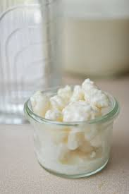

Kefir Recipe

Description
This is a simple homemade recipe for turning milk into fresh kefir in your own kitchen. Remember, kefir is best served fresh, so be sure to consume this within a few days of making it or it will go bad!
Ingredients
- 1 litre fresh milk
- 1 satchel of kefir mix
Steps
- Pour 1 litre of milk into a air tight container, preferably glass.
- Pour contents of kefir satchel powder into the milk and stir gently to ensure the kefir powder is spread evenly.
- Cover the container and store in a dark and warm location. Kefir grows at temperatures in the range of 25 to 35 degrees, ideally. The warmer the environment, the quicker the fermentation process. Note that if you used refrigerated milk, this may take longer. You may want to monitor this a bit more closely on the first try to calibrate how long it takes in your setup, you also don't want to over-ferment your kefir.
- Once complete, the kefir will have a yoghurt like consistency and smell a bit like soul milk or yoghurt. Put it in the fridge and consume within 5 days.
- Mix into your favorite smoothie or add in your preferred yoghurt bowl ingredients like granola, fruits, etc.
- Thanks and happy experimenting!
More Recipes